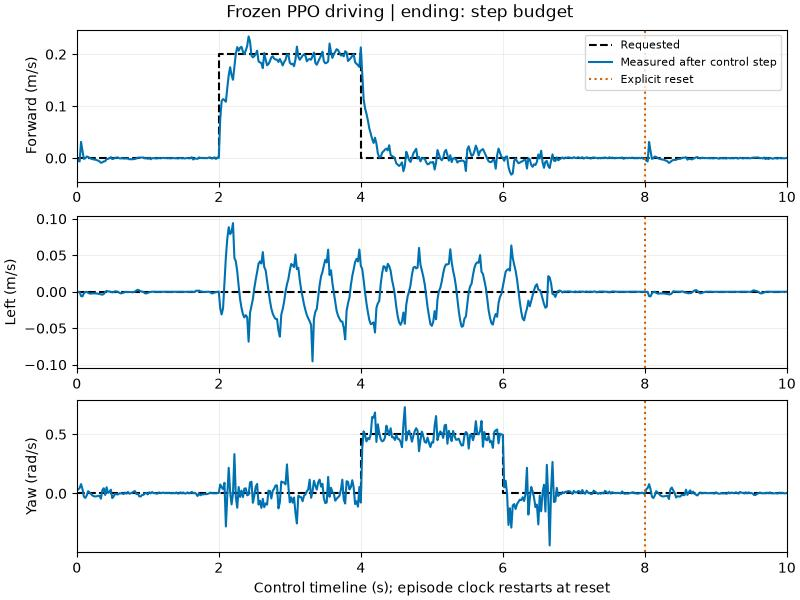
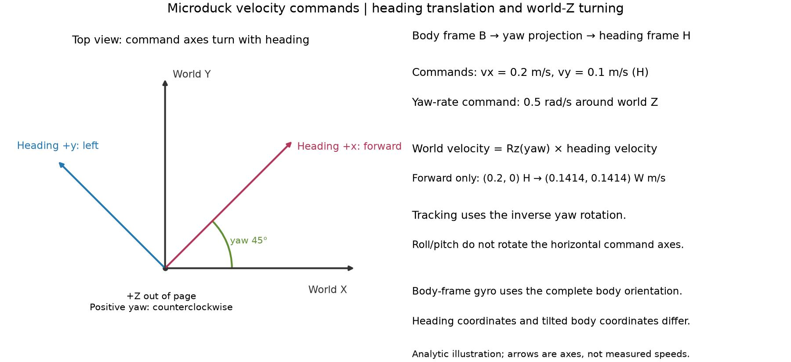

9. Evaluate what you actually care about¶
Run the fixed protocol on an exact checkpoint:
uv run --project environments/locomotion python scripts/locomotion/evaluate.py --checkpoint latest --seed 0
The schedule is 0–4 s standing; 4–8 s forward at 0.2 m/s; 8–12 s backward at 0.1 m/s; 12–16 s lateral at 0.1 m/s; 16–20 s turning at 0.5 rad/s. Every command is supplied in the task's declared frame. Use an exact checkpoint path once selected.
Take the controls¶
After trying your own first training run, you can also drive an optional trained policy. Its full training budget and test conditions stay explicit.
uv run --project environments/locomotion python scripts/locomotion/playground.py --mode policy --checkpoint latest
Open Microduck playground. This loads your saved PPO actor in inference mode. Start with Stand, request 0.2 m/s forward, return to Stand, then try a 0.5 rad/s yaw command. Predict whether stopping will take one control step. Sliders stay inside the training command range; the measured velocities show the actual response. The policy owns the joint targets and remains frozen throughout.
Pause and use Single control step to inspect one transition. In the observation inspector, select velocity_commands to see the command supplied to the actor, or actions to inspect its previous request. Freezing that display leaves the controller running. If the duck falls, its final physical pose is held until Reset experiment; the reset starts a new trial with cleared histories.
For a desktop-free version:
uv run --project environments/locomotion python scripts/locomotion/playground.py --mode policy --checkpoint latest --headless --scripted --steps 500 --capture --output outputs/drive
The 10-second script asks for stand, forward, turn, stand, then explicitly resets and stands. It stops earlier if the duck falls. Its receipt records commands, measured velocities, policy actions, requested servo angles, observation widths, and checkpoint hash. This is a driving activity with its own schedule, not the fixed 20-second benchmark above.

This capture uses the seed-42 reference after 1,000 iterations (98,304,000 transitions). The forward response takes several steps to settle. Lateral oscillations during walking remain visible despite a zero lateral command. A short first-attempt checkpoint can fall instead; do not expect this trace from 50 iterations.
uv run --project environments/locomotion python scripts/locomotion/plot_playground.py --receipt outputs/drive/receipt.json --output outputs/drive/tracking.svg
The viewer's native Reset Episode also clears the tutorial's controller and display histories. If it interrupts a transition while the scene is rendering, that transition is logged as a reset event and excluded from the motion trace. A viewer reset is not a fall.
Which way is forward?¶
Predict: turn the duck 45°, then ask for forward motion. Should its world position change only along world X?

The tracking reward and evaluator express horizontal velocity in the heading frame: keep the body's yaw, remove roll and pitch. At a 45° heading, a forward-only 0.2 m/s command corresponds to world velocity (0.1414, 0.1414, 0) m/s. Turning is compared with angular velocity about world Z. The actor's body-frame gyro uses the complete body orientation; those coordinates differ when the duck tilts.
This is an analytic illustration, not a measured trajectory.
Read the benchmark honestly¶
The evaluator stops at the first episode ending. It does not silently restart a fallen robot and call the next episode a continuation. Each record saves the pre-step pose/velocities, following transition reward, reward-time tracking error, and individual termination reasons; an optional image is the final pre-step state rather than the autoreset stance. A nan_state termination invalidates the trial and returns an error after saving its diagnostic receipt. It is not counted as an ordinary fall, even if autoreset made the subsequent state finite.
Read tracking RMSE together with the fall flag, available duration, and fraction of the 20-second horizon covered. Low error over a short pre-fall segment is not full-protocol success. An early-standing failure has never attempted the later walking segments.
For publication-quality claims, compare at least three independent training seeds under a declared distribution of initial states and conditions, reporting all attempts and variation across training seeds. The nominal teaching reset is deterministic: changing its seed alone does not produce ten distinct physical starting states. The driving capture above is a one-policy preview. Use per-segment response, standing drift, and requested-target rate together with the global tracking error.
Change the starting state deliberately¶
uv run --project environments/locomotion python scripts/locomotion/evaluate.py --checkpoint latest --start-protocol balance-starts-v1 --seed 0
Change the evaluation seed. Compare start_condition, initial_state, and initial_actor_observation in the receipts: which values changed? balance-starts-v1 samples small initial tilts and velocities, plus heading, with the home joints retained. It is a declared simulation challenge. The default nominal-v1 resets deterministically; new seed labels alone do not create different physical starts.
A matched ghost requires the same start protocol, evaluation seed, and actual initial poses and velocities.
Survival is only one check¶
A duck that stands still through a forward command has survived but failed the task. flat-response-v1 requires the complete 20-second protocol, no fall, every segment's tracking limits, sufficient signed response, and limited standing drift. Unattempted segments retain unavailable scores. The criteria are defined in src/isaaclab_tutorial/locomotion/protocols.py; inspect them before choosing your next experiment.
Find the failing condition¶
Before training more, predict the effect of adding 40 ms of IMU/joint-velocity lag. First qualify one exact checkpoint on three physical starts:
uv run --project environments/locomotion python scripts/locomotion/qualify.py --checkpoint logs/rsl_rl/microduck_tutorial/YOUR_RUN/model_49.pt --seeds 0 1 2 --output outputs/qualification/nominal
uv run --project environments/locomotion python scripts/locomotion/qualify.py --checkpoint logs/rsl_rl/microduck_tutorial/YOUR_RUN/model_49.pt --seeds 0 1 2 --observation-delay-ms 40 --output outputs/qualification/delay
uv run --project environments/locomotion python scripts/locomotion/qualification_workshop.py --report outputs/qualification/nominal/report.json --report outputs/qualification/delay/report.json
Replace YOUR_RUN/model_49.pt with the same saved checkpoint in both commands. Open the printed index.html, switch conditions, select a trial and inspect segment coverage. Did it ever reach the forward command? Missing response bars mean those segments were never attempted. Selecting a trial displays recordings; it does not run new physics.
A single trained policy on three starts is a diagnostic. For a broader comparison, repeat --checkpoint with independently trained models from the same recipe and completed transition budget, and use more evaluation seeds. The tool checks distinct training seeds, actual checkpoint progress and saved configuration before launching. It reports response and survival for each policy, then variation across independent training seeds. With one policy that variation stays unavailable.
Trials and their logs are saved below outputs/qualification/. A software error leaves the study incomplete. A physical fall stays an attempted outcome; numerical failures remain invalid outcomes. Resume an interrupted, unchanged command with --resume; matching successful receipts and physical failures can be reused, while mismatched sources/settings/checkpoints are rejected. --workers allows independent simulator processes if GPU memory permits.
Read coverage and outcome counts beside every tracking average. Fallen and invalid attempts stay in pass-rate denominators. Full-trial tracking averages exclude incomplete attempts and show their count; if none completed, the average stays unavailable. Repeating the deterministic nominal reset does not manufacture distinct physical starts.
Challenge: find a policy with a good-looking scalar score but insufficient episode coverage. Explain why reward and task success disagree.